Show the code
library(astsa)
library(here)
library(knitr)
library(tidyverse)library(astsa)
library(here)
library(knitr)
library(tidyverse)# resolve conflicts with plotly
# conflicted::conflicts_prefer(plotly::layout)
# resolve conflicts with tidymodels packages
# tidymodels::tidymodels_prefer()library(eda4mlr)# stabilize simulated data
source(here("code", "eda4ml_set_seed.R"))Chapter 12 introduced two complementary views of time series dependence: the time domain, where the autocorrelation function (ACF) measures how observations relate across lags, and the frequency domain, where the spectrum measures how variance is distributed across periodic components. Chapter 13 developed the time-domain view into a family of forecasting models—AR, MA, ARIMA, SARIMA—that exploit autocorrelation structure for prediction.
This chapter develops the frequency-domain perspective. Where Chapter 13 asked “how does the past predict the future?”, we now ask “what periodic components structure this process?” This shift in emphasis—from prediction to understanding—reflects the dual aims of data analysis that run throughout this book.
The frequency perspective is natural for many phenomena. Sunspots exhibit an approximately 11-year cycle tied to solar magnetic dynamics. Temperature data show annual cycles driven by Earth’s orbit. Economic data display seasonal patterns from human activity. These periodicities are not merely patterns to exploit for forecasting; they reflect underlying mechanisms. The spectrum makes such structure visible.
There is a deep reason why decomposition into sinusoidal components is fundamental to time series analysis. Complex exponentials \(e^{i\lambda t}\) are eigenfunctions of the back-shift operator:
\[\mathcal{B}^s e^{i\lambda t} = e^{i\lambda(t-s)} = e^{-i\lambda s} \cdot e^{i\lambda t}\]
Any linear, time-invariant operation—filtering, smoothing, differencing—acts simply on sinusoidal components, multiplying each by a constant. This is why frequency decomposition provides the natural coordinate system for stationary processes. When we transform to the frequency domain, complex operations become simple multiplications.
We proceed as follows:
The Spectrum Revisited: We recall the spectrum’s definition from Chapter 12 and develop its interpretation as a variance decomposition.
Spectra of ARMA Processes: We derive the theoretical spectra of AR and MA models from Chapter 13, showing how time-domain parameters translate to frequency-domain features.
The Periodogram: We introduce the sample estimate of the spectrum and confront its fundamental problem: inconsistency.
Smoothed Spectrum Estimation: We show how averaging produces consistent estimates, at the cost of frequency resolution.
Examples: We analyze sunspots (revisiting Chapter 12) and city temperatures, demonstrating spectrum estimation and interpretation in practice.
Coherence: We extend to multiple series, asking at which frequencies two processes move together.
The Dual Perspectives: We consolidate the time-domain and frequency-domain views, clarifying when each is most useful.
Chapter 12 introduced the spectrum \(f(\lambda)\) as the Fourier transform of the autocovariance function. Here we develop its interpretation as a decomposition of variance by frequency.
For a stationary process with autocovariance function \(\gamma(u)\), the spectrum is defined as:
\[f(\lambda) = \sum_{u=-\infty}^{\infty} \gamma(u) e^{-i\lambda u}\]
The inverse relationship recovers the autocovariance:
\[\gamma(u) = \frac{1}{2\pi} \int_{-\pi}^{\pi} f(\lambda) e^{i\lambda u} \, d\lambda\]
Setting \(u = 0\) in the inverse formula yields a key insight:
\[\gamma(0) = \sigma_X^2 = \frac{1}{2\pi} \int_{-\pi}^{\pi} f(\lambda) \, d\lambda\]
The total variance equals the integral of the spectrum over all frequencies. The spectrum thus tells us how variance is distributed across frequencies: \(f(\lambda)\) measures the contribution of oscillations near frequency \(\lambda\) to the overall variability of the process.
The shape of the spectrum reveals process characteristics:
These features complement the ACF/PACF diagnostics from Chapter 12. A slowly decaying ACF corresponds to low-frequency dominance in the spectrum; a rapidly alternating ACF corresponds to a spectral peak near \(\lambda = \pi\).
The spectrum and autocovariance contain identical information—they are Fourier transform pairs. Yet they emphasize different aspects:
| ACF | Spectrum |
|---|---|
| Correlation at lag \(u\) | Variance at frequency \(\lambda\) |
| How past predicts future | What periodic structure is present |
| Time-domain diagnostics | Frequency-domain diagnostics |
Choosing between them is a matter of which view illuminates the question at hand. For forecasting, the ACF guides model selection. For understanding periodic structure, the spectrum is more direct.
Chapter 13 introduced ARMA models in the time domain. Here we derive their spectra, connecting time-domain parameters to frequency-domain features.
For white noise \(W(t) \sim wn(0, \sigma_W^2)\), the autocovariance is \(\gamma_W(0) = \sigma_W^2\) and \(\gamma_W(u) = 0\) for \(u \neq 0\). The spectrum is therefore constant:
\[f_W(\lambda) = \sigma_W^2\]
A flat spectrum—equal power at all frequencies—is the signature of white noise. This provides a baseline: departures from flatness indicate temporal structure.
For the AR(1) process \(X(t) = \phi X(t-1) + W(t)\), the spectrum is:
\[f(\lambda) = \frac{\sigma_W^2}{|1 - \phi e^{-i\lambda}|^2} = \frac{\sigma_W^2}{1 - 2\phi\cos\lambda + \phi^2}\]
The spectrum shape depends on \(\phi\):
graphics::par(mfrow = c(1, 2))
astsa::arma.spec(ar = 0.8, main = expression(paste("AR(1), ", phi, " = 0.8")), col = 4)
astsa::arma.spec(ar = -0.8, main = expression(paste("AR(1), ", phi, " = -0.8")), col = 4)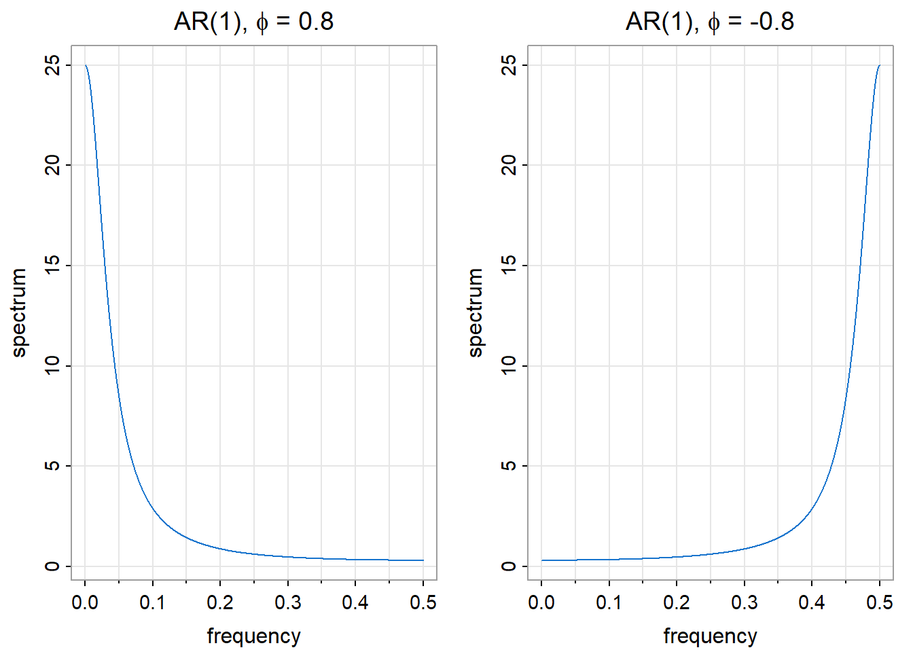
For the MA(1) process \(X(t) = W(t) + \theta W(t-1)\), the spectrum is:
\[f(\lambda) = \sigma_W^2 |1 + \theta e^{-i\lambda}|^2 = \sigma_W^2 (1 + 2\theta\cos\lambda + \theta^2)\]
The MA(1) spectrum has the inverse pattern of AR(1): where AR(1) with \(\phi > 0\) peaks at low frequencies, MA(1) with \(\theta > 0\) peaks at high frequencies.
graphics::par(mfrow = c(1, 2))
astsa::arma.spec(ma = 0.8, main = expression(paste("MA(1), ", theta, " = 0.8")), col = 4)
astsa::arma.spec(ma = -0.8, main = expression(paste("MA(1), ", theta, " = -0.8")), col = 4)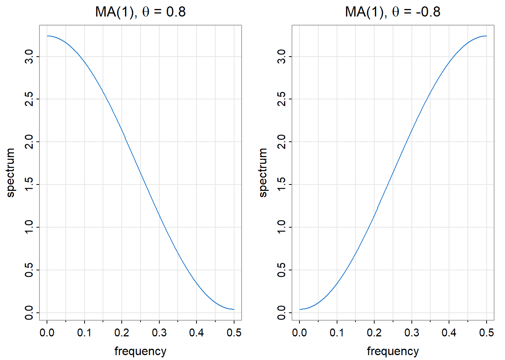
AR(2) processes can exhibit spectral peaks at frequencies other than 0 or \(\pi\). When the AR polynomial \(\phi(z) = 1 - \phi_1 z - \phi_2 z^2\) has complex roots, the spectrum peaks at a frequency determined by those roots.
astsa::arma.spec(ar = c(1.3, -0.7),
main = expression(paste("AR(2): ", phi[1], " = 1.3, ", phi[2], " = -0.7")),
col = 4)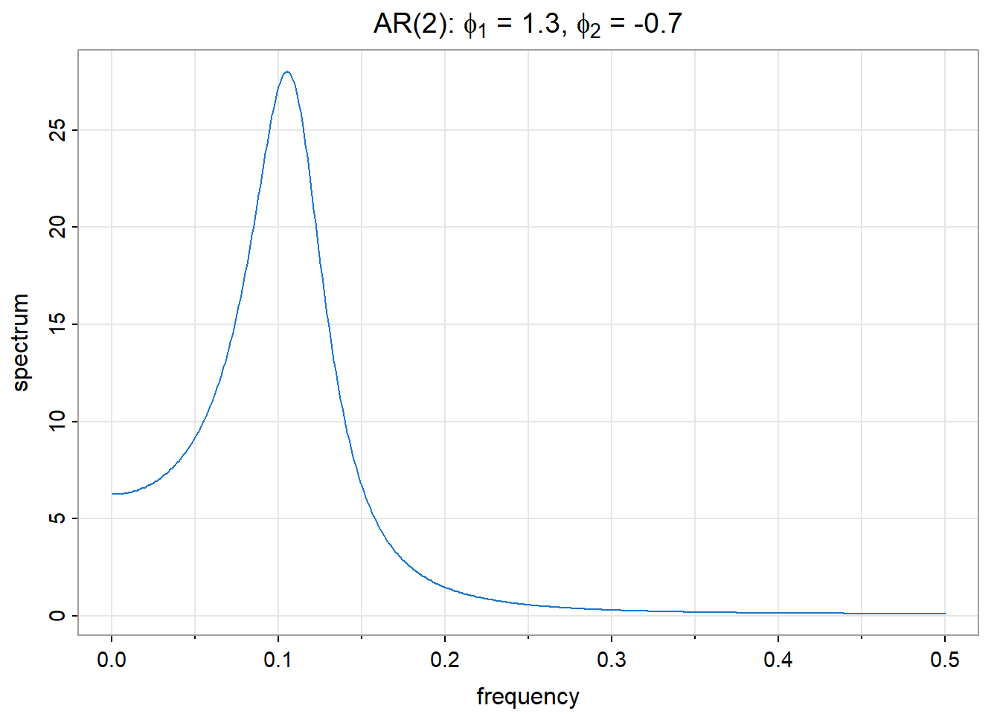
This is the spectrum of the recruitment series model from Chapter 13. The spectral peak corresponds to the damped oscillation visible in the ACF—the same quasi-periodic structure, viewed in two different coordinate systems.
For a general ARMA(p,q) process with AR polynomial \(\phi(z)\) and MA polynomial \(\theta(z)\):
\[f(\lambda) = \sigma_W^2 \frac{|\theta(e^{-i\lambda})|^2}{|\phi(e^{-i\lambda})|^2}\]
The spectrum has peaks where the AR polynomial is small (roots near the unit circle) and troughs where the MA polynomial is small. This formula connects Chapter 13’s model parameters directly to frequency-domain features.
Given data \(X(0), X(1), \ldots, X(T-1)\), how do we estimate \(f(\lambda)\)? The natural approach is to replace the theoretical autocovariance \(\gamma(u)\) with its sample estimate \(\hat{\gamma}(u)\) in the spectrum definition.
This leads to the periodogram:
\[I(\lambda) = \frac{1}{T} \left| \sum_{t=0}^{T-1} X(t) e^{-i\lambda t} \right|^2\]
The periodogram measures how well a sinusoid at frequency \(\lambda\) fits the data. Large \(I(\lambda)\) indicates strong oscillation at that frequency; small \(I(\lambda)\) indicates little power there.
At the Fourier frequencies \(\lambda_j = 2\pi j / T\) for \(j = 0, 1, \ldots, T-1\), the periodogram can be computed efficiently via the Fast Fourier Transform (FFT).
The periodogram is asymptotically unbiased:
\[E\{I(\lambda)\} \to f(\lambda) \text{ as } T \to \infty\]
However, it is not consistent—its variance does not shrink to zero as sample size increases. For frequencies \(\lambda \not\equiv 0 \pmod{\pi}\):
\[I(\lambda) \sim f(\lambda) \cdot \frac{\chi_2^2}{2}\]
The periodogram is approximately distributed as the true spectrum times a chi-squared random variable with 2 degrees of freedom, divided by 2. Since \(Var(\chi_2^2/2) = 1\), the coefficient of variation remains constant regardless of sample size.
This is a striking result: more data does not reduce periodogram variability. The periodogram fluctuates wildly around the true spectrum, even with millions of observations.
set.seed(42)
wn <- stats::ts(stats::rnorm(256))
spec_wn <- stats::spec.pgram(wn, taper = 0, log = "no", plot = FALSE)
graphics::plot(spec_wn$freq, spec_wn$spec, type = "l", col = 4,
xlab = "Frequency", ylab = "Periodogram",
main = "White Noise: True Spectrum is Flat")
graphics::abline(h = 1, col = 2, lty = 2, lwd = 2)
graphics::legend("topright", legend = c("Periodogram", "True spectrum"),
col = c(4, 2), lty = c(1, 2), bty = "n")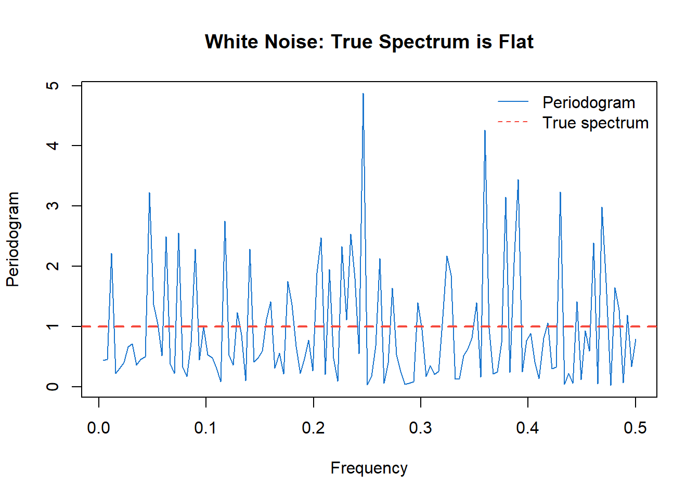
The true spectrum of white noise is constant (red dashed line), but the periodogram (blue) varies by orders of magnitude. This variability is not due to small sample size—it persists asymptotically.
The periodogram’s inconsistency arises because each periodogram ordinate is based on essentially one degree of freedom. The solution is to average over nearby frequencies:
\[\hat{f}(\lambda) = \sum_j W_j \cdot I(\lambda - \lambda_j)\]
where the weights \(W_j\) form a smoothing kernel centered at \(\lambda\). By averaging \(m\) periodogram ordinates, we obtain an estimate with approximately \(2m\) degrees of freedom, reducing variance by a factor of \(m\).
Smoothing introduces a bias-variance trade-off:
| More smoothing | Less smoothing |
|---|---|
| Lower variance | Higher variance |
| Blurs nearby peaks | Resolves nearby peaks |
| Risk: miss narrow features | Risk: spurious peaks from noise |
The bandwidth \(\beta\) controls this trade-off. A wider bandwidth averages more ordinates, reducing variance but potentially smoothing over distinct spectral features. A narrow bandwidth preserves detail but leaves more noise.
For consistency, we need the bandwidth to shrink (\(\beta \to 0\)) but the number of averaged ordinates to grow (\(\beta T \to \infty\)) as \(T \to \infty\).
A common choice is the modified Daniell kernel—essentially a moving average over adjacent frequencies. In R:
stats::spec.pgram(x, spans = c(5, 5), taper = 0.1)The spans argument specifies the widths of successive Daniell smoothers. Applying two smoothers (e.g., spans = c(5, 5)) produces a smoother result than one wider smoother. The taper argument applies a data taper to reduce spectral leakage from the finite sample boundaries.
set.seed(42)
wn <- stats::ts(stats::rnorm(256))
spec_raw <- stats::spec.pgram(wn, taper = 0, log = "no", plot = FALSE)
spec_smooth <- stats::spec.pgram(wn, spans = c(7, 7), taper = 0.1, log = "no", plot = FALSE)
graphics::plot(spec_raw$freq, spec_raw$spec, type = "l", col = grDevices::gray(0.7),
xlab = "Frequency", ylab = "Spectrum estimate",
main = "Effect of Smoothing")
graphics::lines(spec_smooth$freq, spec_smooth$spec, col = 4, lwd = 2)
graphics::abline(h = 1, col = 2, lty = 2, lwd = 2)
graphics::legend("topright", legend = c("Raw periodogram", "Smoothed", "True"),
col = c(grDevices::gray(0.7), 4, 2), lty = c(1, 1, 2), lwd = c(1, 2, 2), bty = "n")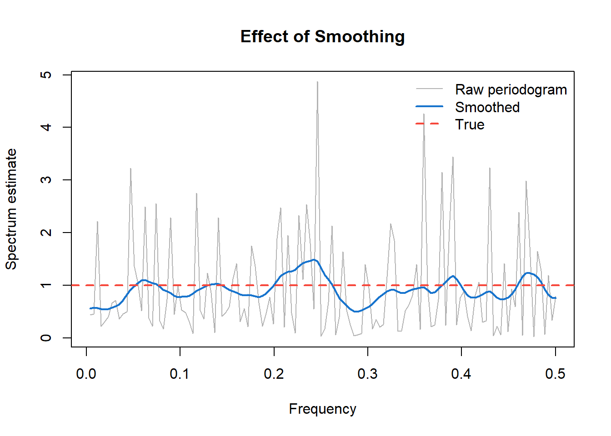
For the smoothed spectrum estimate with \(\nu\) degrees of freedom:
\[\frac{\nu \hat{f}(\lambda)}{f(\lambda)} \sim \chi_\nu^2\]
This yields a confidence interval for the true spectrum:
\[\left[ \frac{\nu \hat{f}(\lambda)}{\chi_{\nu, 1-\alpha/2}^2}, \; \frac{\nu \hat{f}(\lambda)}{\chi_{\nu, \alpha/2}^2} \right]\]
The interval is multiplicative, not additive—it has constant width on a log scale. This is why spectrum plots typically use a logarithmic vertical axis: confidence bands then have uniform width across all frequencies.
We return to the sunspot data introduced in Chapter 12, now analyzing its spectrum.
astsa::tsplot(datasets::sunspot.month, col = 4, ylab = "Sunspot Number", main = "")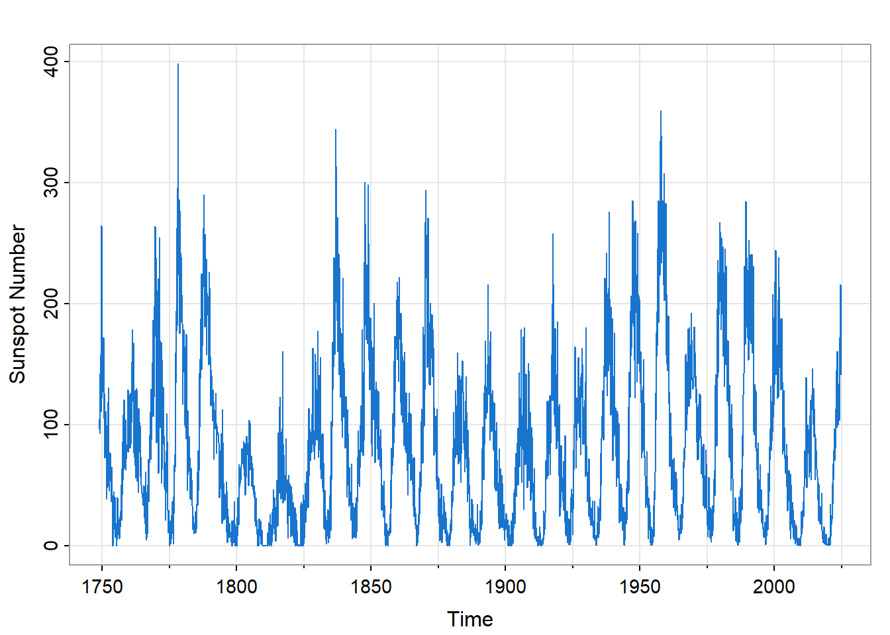
The time series shows clear cyclical behavior, but with considerable irregularity. The cycle length varies; the amplitude varies even more. A simple sinusoidal model would not fit well. What does the spectrum reveal?
sunspots_spec <- stats::spec.pgram(datasets::sunspot.month, spans = c(7, 7),
taper = 0.1, log = "yes", col = 4, main = "")
# Mark the ~11-year cycle (132 months)
graphics::abline(v = 1/132, col = 2, lty = 2)
graphics::text(1/132 + 0.01, max(log10(sunspots_spec$spec)) - 1, "~11 years", col = 2, adj = 0)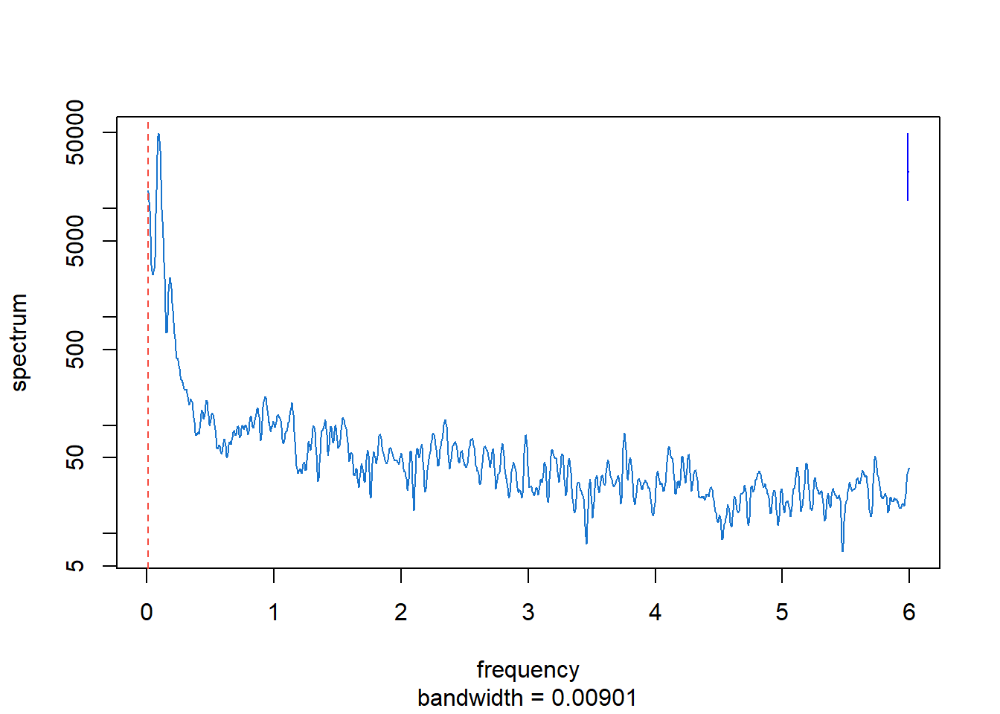
The spectrum reveals several features:
Dominant peak near \(\lambda = 1/132\) cycles/month: This corresponds to a period of approximately 132 months, or 11 years—the well-known solar cycle.
Broad peak rather than sharp line: If the cycle had exactly constant period, the spectral peak would be narrow. The breadth indicates that the period varies from cycle to cycle, typically ranging from about 9 to 14 years.
Harmonics at higher frequencies: Smaller peaks at multiples of the fundamental frequency indicate that the solar cycle is not purely sinusoidal—it has a more complex waveform.
Low-frequency power: Variance at very low frequencies reflects long-term modulation of cycle amplitude, such as the Maunder Minimum period of reduced solar activity.
The spectrum thus quantifies what the time plot shows qualitatively, while adding information about the cycle’s variability that would be difficult to extract by eye.
Daily temperature data provide another window into spectrum analysis. We examine temperatures from Honolulu, Hawaii—a location where the annual cycle should dominate.
hnl_temp <- stats::ts(
hnl_nyc_wide$HNL, frequency = 365, start = c(1995, 1) )
astsa::tsplot(
hnl_temp, col = 2, ylab = "Temperature (°F)",
main = "HNL Temps" )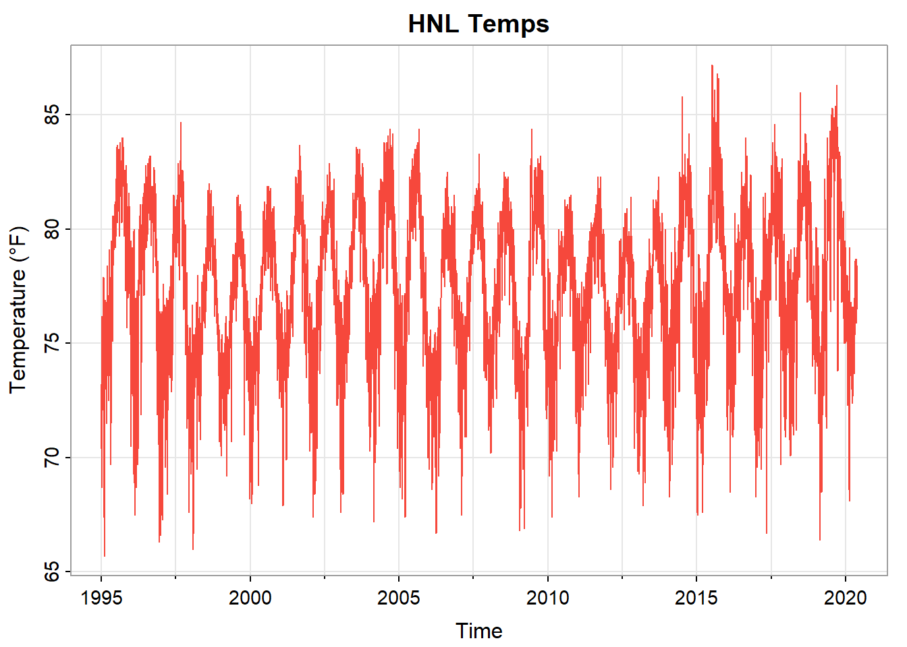
Honolulu’s tropical climate produces mild, stable temperatures: mean 77°F with standard deviation only 3.4°F. The annual cycle is visible but modest—Hawaii’s seasonal variation is much smaller than at mid-latitudes.
temp_spec <- stats::spec.pgram(
hnl_temp, spans = c(7, 7), taper = 0.1,
log = "yes", col = 4, xlab = "frequency (cycles/year)",
main = "HNL Spectrum" )
graphics::abline(v = 1/365, col = 2, lty = 2)
graphics::text(1/365 + 0.002, max(log10(temp_spec$spec)) - 1, "1 year", col = 2, adj = 0)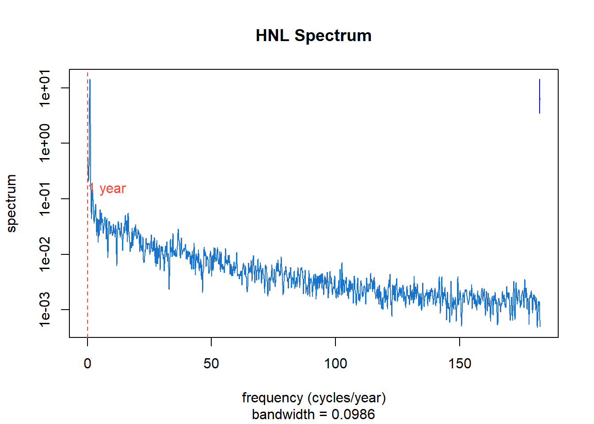
The spectrum shows:
Sharp peak at \(\lambda = 1/365\) cycles/day: The annual cycle, driven by Earth’s orbital mechanics, dominates the variance. Unlike sunspots, this periodicity is exact—the spectral peak is narrow.
Harmonics: Peaks at 2/365, 3/365, etc., indicate that the annual temperature pattern is not purely sinusoidal.
Low-frequency power: Some variance at very low frequencies reflects year-to-year variation in mean temperature.
Broadband background: Day-to-day weather variability contributes across all frequencies, visible as the elevated baseline.
The spectrum answers a quantitative question: what fraction of temperature variance is attributable to the annual cycle? Integrating under the spectral peak and comparing to total variance provides this answer directly.
When we have multiple time series, we can ask: at which frequencies do they move together? This leads to the cross-spectrum and coherence.
For two series \(X_a(t)\) and \(X_b(t)\), the cross-spectrum \(f_{a,b}(\lambda)\) is the Fourier transform of their cross-covariance function:
\[f_{a,b}(\lambda) = \sum_{u=-\infty}^{\infty} \gamma_{a,b}(u) e^{-i\lambda u}\]
The cross-spectrum is generally complex-valued, with magnitude indicating the strength of co-movement and phase indicating the lead-lag relationship at each frequency.
Coherence is the squared correlation between two series at each frequency:
\[|R_{a,b}(\lambda)|^2 = \frac{|f_{a,b}(\lambda)|^2}{f_{a,a}(\lambda) f_{b,b}(\lambda)}\]
Like a squared correlation coefficient, coherence ranges from 0 (no linear relationship at frequency \(\lambda\)) to 1 (perfect linear relationship). It answers: “How strongly do these series co-vary at this frequency?”
We compare daily temperatures at Honolulu and New York City to illustrate coherence analysis.
hnl_nyc_mvts <- stats::ts(
data.frame(
HNL = hnl_nyc_wide$HNL,
NYC = hnl_nyc_wide$NYC ),
frequency = 365,
start = c(1995, 1)
)
astsa::tsplot(
hnl_nyc_mvts, col = c(2, 4), spaghetti = TRUE,
ylab = "Temperature (°F)",
main = "HNL, NYC Temps" )
graphics::legend(
"bottomright", legend = c("HNL", "NYC"),
col = c(2, 4), lty = 1, bty = "n" )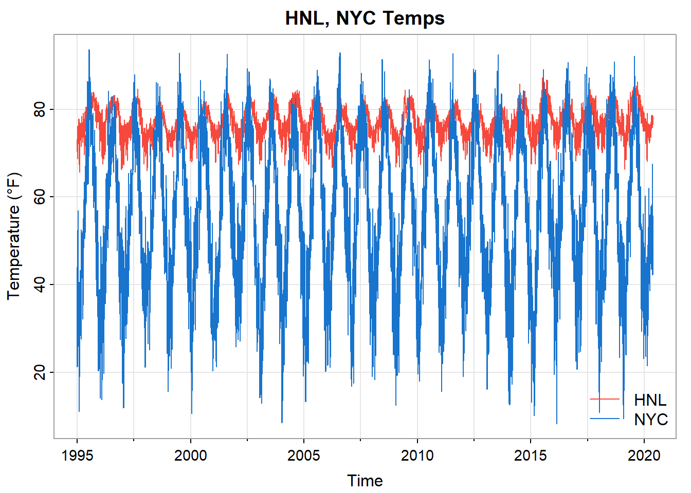
Both cities show annual cycles, but NYC has much larger amplitude (mean 56°F, SD 17.1°F versus Honolulu’s 77°F and 3.4°F). NYC also shows more day-to-day variability from mid-latitude weather systems.
hnl_nyc_spec <- stats::spec.pgram(
hnl_nyc_mvts, spans = c(7, 7),
taper = 0.1, plot = FALSE )
graphics::plot(
hnl_nyc_spec$freq,
hnl_nyc_spec$coh,
type = "l", col = 4,
xlab = "Frequency (cycles/year)", ylab = "Coherence",
main = "HNL-NYC Coherence", ylim = c(0, 1)
)
graphics::abline(v = 1/365, col = 2, lty = 2)
graphics::text(
1/365 + 0.003, 0.95, "1 year", col = 2, adj = 0 )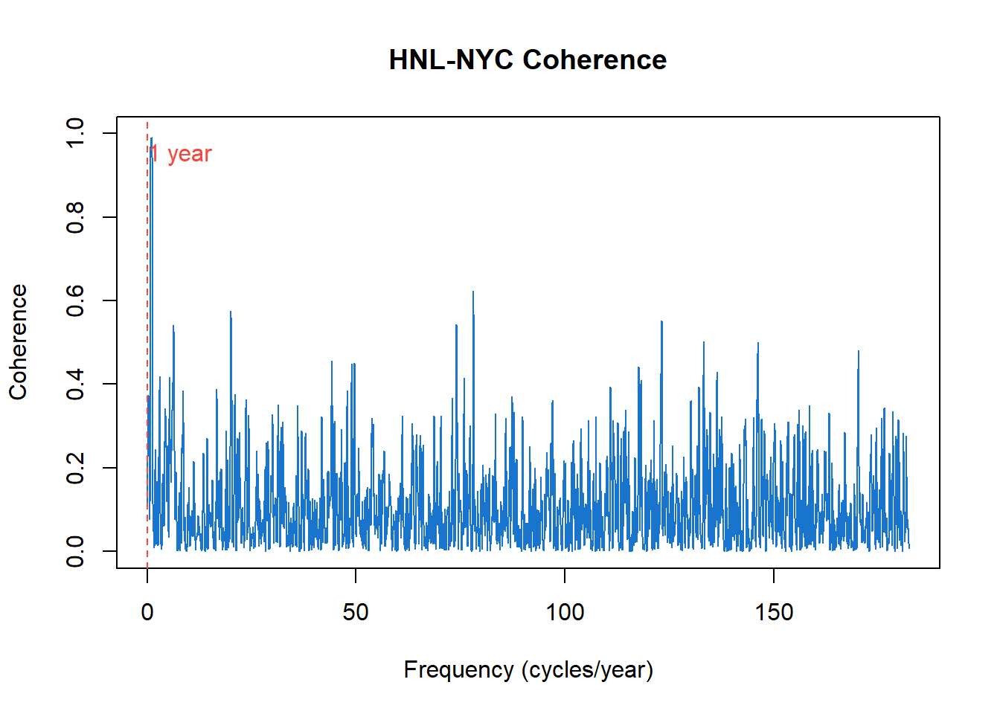
The coherence plot reveals a striking pattern:
At the annual frequency: Coherence approaches 1. Both cities warm in summer and cool in winter, driven by the same astronomical cause—Earth’s axial tilt and orbital position. The annual cycle is a shared signal.
At higher frequencies: Coherence (once smoothed) is near zero. Day-to-day weather in Honolulu tells us nothing about weather in New York City. Local weather systems—fronts, storms, pressure patterns—are independent across such distances.
Coherence thus identifies which periodicities are shared between series and which are independent. This is valuable for understanding causal mechanisms: high coherence suggests a common driver; low coherence suggests independent local dynamics.
We can now consolidate the two perspectives developed across Chapters 12–14:
| Time Domain | Frequency Domain |
|---|---|
| ACF, PACF | Spectrum |
| AR, MA, ARIMA models | Spectral peaks, bandwidth |
| Forecasting | Identifying cycles |
| “How does past predict future?” | “What periodic structure is present?” |
These are equivalent descriptions—Fourier transform pairs—but they illuminate different aspects of the data.
Time domain methods excel when the goal is forecasting and short-term dependence modeling. The ARIMA family provides a systematic framework for building predictive models, with diagnostic tools (ACF, PACF) that guide model selection.
Frequency domain methods excel when the goal is identifying periodicities and understanding cyclic mechanisms. The spectrum directly reveals what cycles are present and how strong they are.
Best practice: Use both. They reveal different aspects of the same reality. The sunspot example illustrates this: an AR(2) model captures the quasi-periodic behavior for forecasting purposes, while the spectrum reveals the ~11-year solar cycle and shows that its period varies.
Consider how the two perspectives complement each other:
Sunspots: Time-domain analysis identifies an AR(2) model with a characteristic damped oscillation in the ACF. Frequency-domain analysis shows a broad spectral peak near the 11-year period. The breadth of the peak—invisible in the time-domain diagnostics—reveals that the cycle period itself varies.
Temperature data: Time-domain analysis shows strong positive autocorrelation—today predicts tomorrow. Frequency-domain analysis shows a sharp annual peak, quantifying exactly how much variance the seasonal cycle explains. Coherence analysis reveals that two distant cities share the annual cycle but have independent day-to-day weather.
Economic data: Time-domain SARIMA models capture both trend and seasonality for forecasting. Frequency-domain analysis can reveal additional cycles—business cycles, for instance—that might be obscured by the dominant seasonal pattern.
This chapter developed the frequency-domain perspective on time series, complementing the time-domain methods of Chapter 13.
Key insights:
The spectrum decomposes variance by frequency. Peaks indicate dominant cycles; a flat spectrum indicates white noise. The spectrum and autocovariance are Fourier transform pairs—same information, different emphasis.
ARMA spectra connect the two domains. AR processes have spectral peaks where their polynomial roots approach the unit circle. The time-domain model parameters determine frequency-domain features.
The periodogram is the sample spectrum estimate. It is unbiased but inconsistent—its variance does not shrink with sample size, following an asymptotic chi-squared distribution.
Smoothing produces consistent estimates. Averaging over nearby frequencies trades resolution for stability. The bandwidth controls this bias-variance trade-off.
Coherence measures shared periodicity. For multiple series, coherence identifies which frequencies exhibit co-movement and which are independent.
The dual perspectives are complementary. Time-domain methods serve forecasting; frequency-domain methods serve understanding. Complete analysis draws on both.
White Noise Spectrum. Generate 500 observations of Gaussian white noise using stats::rnorm(). (a) Compute and plot the raw periodogram using stats::spec.pgram() with no smoothing. (b) The true spectrum is flat (constant). How much does the periodogram deviate? (c) Apply smoothing with spans = c(7, 7) and compare. (d) Repeat the exercise several times with different random seeds. What do you observe about the variability of the raw periodogram vs. the smoothed estimate?
Periodogram Distribution. For the white noise simulations above, at a fixed Fourier frequency \(\lambda_j\), the periodogram ordinate \(I(\lambda_j)\) follows a \(\chi_2^2/2\) distribution (scaled by the true spectrum). (a) Generate 1000 periodogram ordinates at a single frequency by repeating the simulation. (b) Plot a histogram and overlay the theoretical \(\chi_2^2/2\) density. (c) What does this tell you about confidence intervals for spectral estimates?
AR Spectrum Identification. Using astsa::arma.spec(), plot the theoretical spectra of AR(1) processes with \(\phi = 0.9\), \(\phi = 0.5\), and \(\phi = -0.5\). (a) How does the sign of \(\phi\) affect the spectrum shape? (b) How does the magnitude of \(\phi\) affect the peak height? (c) For each case, what is the dominant period (if any)?
SOI Spectrum. Using the Southern Oscillation Index data (astsa::soi): (a) Plot the smoothed spectrum with appropriate bandwidth. (b) Identify the two dominant peaks and convert their frequencies to periods in months. (c) The annual peak is expected. What physical phenomenon explains the other dominant peak? (d) Compare the spectrum to the ACF. Which diagnostic more clearly reveals the El Niño periodicity?
Sunspot Cycle. The sunspot series (astsa::sunspotz) exhibits a well-known approximately 11-year cycle. (a) Estimate the spectrum and identify the dominant peak. Convert the peak frequency to a period—how does this compare to the commonly cited “11-year solar cycle”? (b) The peak is broad rather than sharp. What does this indicate about the solar cycle? (c) Are there harmonics visible? What do they imply about the waveform shape? (d) Using the spectrum, estimate what fraction of total variance is attributable to the ~11-year cycle.
Global Temperature Spectrum. For the global land temperature series (astsa::gtemp_land), estimate and plot the spectrum. (a) Does it show evidence of annual periodicity? (b) What feature dominates the spectrum, and what does this indicate about the series? (c) How does the spectral shape relate to what you observe in the time plot? (d) What does the low-frequency dominance imply for trend estimation?
Bandwidth Selection. Using the recruitment series (astsa::rec): (a) Estimate the spectrum with three different bandwidths—narrow (spans = c(3, 3)), medium (spans = c(7, 7)), and wide (spans = c(15, 15)). (b) How do the estimates differ in terms of variance and resolution? (c) Which bandwidth would you choose for a final analysis? Justify your choice. (d) How does sample size affect the appropriate bandwidth choice?
AR(2) Spectrum. The recruitment series is well-modeled by an AR(2) process. (a) Fit an AR(2) model using stats::ar.ols(). (b) Compute the theoretical AR(2) spectrum from the fitted coefficients using the formula in the chapter. (c) Overlay the theoretical spectrum on the smoothed periodogram. How well do they match? (d) Where does the spectral peak occur, and what period does this correspond to?
Coherence: SOI and Recruitment. Using the SOI and recruitment data (both from astsa): (a) Estimate the coherence between the two series. (b) At what frequencies is coherence highest? (c) The SOI measures atmospheric pressure differences; recruitment measures fish population. What physical mechanism might explain their coherence? (d) Is there a phase relationship visible in the cross-spectrum?
Coherence: Temperature. Using the HNL-NYC temperature data from eda4mlr: (a) Estimate and plot the coherence. (b) At what frequency is coherence essentially 1? Why? (c) At what frequencies is coherence near 0? What does this mean physically? (d) If you had temperature data from London, what coherence pattern would you expect with NYC? With Honolulu?
Textbooks:
Shumway, R.H. and Stoffer, D.S. (2025). Time Series Analysis and Its Applications: With R Examples (5th ed.). Springer. Chapters 4–5 provide comprehensive treatment of spectrum estimation and coherence.
Bloomfield, P. (2000). Fourier Analysis of Time Series: An Introduction (2nd ed.). Wiley. An accessible introduction focusing on the frequency domain.
Brillinger, D.R. (2001). Time Series: Data Analysis and Theory. SIAM. A mathematically rigorous treatment of the theory.
Percival, D.B. and Walden, A.T. (1993). Spectral Analysis for Physical Applications. Cambridge University Press. Comprehensive coverage of modern spectrum estimation methods.
Software:
The stats::spec.pgram() function provides basic spectrum estimation in R.
The astsa package provides arma.spec() for theoretical ARMA spectra and enhanced plotting functions.
The spectrum package and the CRAN Task View on Time Series (https://cran.r-project.org/web/views/TimeSeries.html) provide additional tools.
\[ \begin{align} f(\lambda) \quad & \quad \text{spectrum (spectral density) at frequency } \lambda \\ \\ f_{a,b}(\lambda) \quad & \quad \text{cross-spectrum of series } a \text{ and } b \\ \\ \hat{f}(\lambda) \quad & \quad \text{smoothed spectrum estimate} \\ \\ I(\lambda) \quad & \quad \text{periodogram at frequency } \lambda \\ \\ \gamma(u) \quad & \quad \text{autocovariance at lag } u \\ \\ \gamma_{a,b}(u) \quad & \quad \text{cross-covariance of series } a \text{ and } b \text{ at lag } u \\ \\ R_{a,b}(\lambda) \quad & \quad \text{coherency: } \frac{f_{a,b}(\lambda)}{\sqrt{f_{a,a}(\lambda) f_{b,b}(\lambda)}} \\ \\ |R_{a,b}(\lambda)|^2 \quad & \quad \text{coherence (squared coherency)} \\ \\ \beta \quad & \quad \text{bandwidth of smoothed spectrum estimate} \\ \\ \nu \quad & \quad \text{degrees of freedom of smoothed estimate} \\ \\ \lambda_j \quad & \quad \text{Fourier frequency: } 2\pi j / T \\ \\ T \quad & \quad \text{number of observations} \\ \\ \chi_\nu^2 \quad & \quad \text{chi-squared distribution with } \nu \text{ degrees of freedom} \end{align} \]